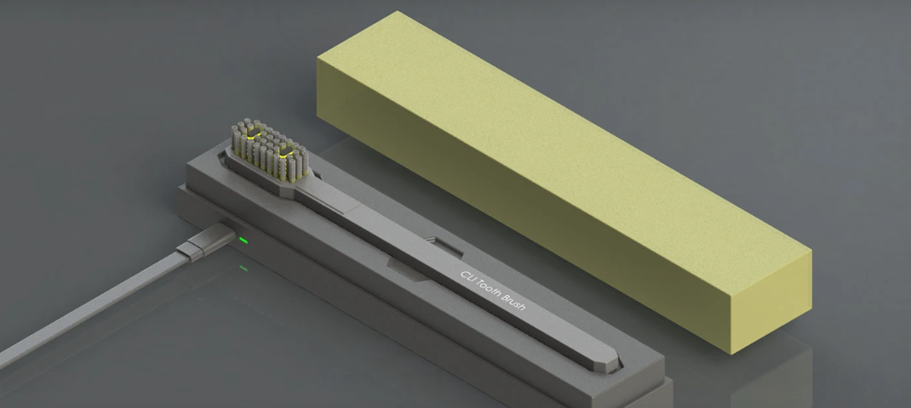

Abdul Wahab
Mechanical Design Engineer and career path is in AI Mobility Systems and Autonomous Vehicles.
Profile & Interests
Research Interests:
My name is Abdul Wahab, and I completed my Bachelor of Science (B.Sc.) in Mechanical Engineering from the University of Engineering and Technology (UET), Main Campus Peshawar. I am seeking to join graduate research team investigating Autonomous Vehicles (AVs), Advanced Driver-Assistance Systems (ADAS), and Connected Autonomous Vehicles (CAVs) that share data on the road to navigate safely. As a mechanical design engineer at Dysol (Pvt) Ltd, I collaborated with production teams to solve difficult manufacturing puzzles. For example, when a custom clamping manifold was too complex to machine as a single piece, we redesigned it into two symmetrical halves bolted together with four corner screws to make fabrication simple. My degree provided strong training in kinematics, dynamics, control theory, and 3D Computer-Aided Design (CAD). To connect physical mechanisms with intelligent software, I studied Python programming and Machine Learning (ML) through codanics.com to build simulators testing vehicle steering and emergency braking physics. I am ready to learn these advanced technology and to implement my skills, knowledge, and experience to design safer mobility systems for ground and aerial transportation.
Professional Experience
- Worked as a Mechanical Design Engineer in the Research & Development (R&D) department of a real company, designing actual medical devices and consumer products that were meant to be manufactured and sold.
- Designed complex 3D parts from scratch in SolidWorks, then ran computer stress-tests using Finite Element Analysis (FEA), which is like a virtual crash test that shows exactly where a part will bend or break before you ever build it.
- Applied Design for Manufacturing and Assembly (DFM/DFA) rules, which are a set of guidelines that make sure a part designed on a computer can actually be mass-produced in a factory without expensive problems or waste.
- Worked with other engineering teams to test physical prototypes, check if manufactured parts matched the design specs, and fix production problems before products went to customers.
- Took on paid engineering projects from international clients through freelance platforms and independent contracts, working remotely with clients from different countries.
- Built 3D Computer-Aided Design (CAD) models, full assemblies, 2D technical drawings, and photorealistic renders, the kind of detailed visuals factories need to understand exactly how to build a product.
- Designed parts for everyday consumer products and industrial machines, choosing the right materials and manufacturing methods to keep costs low and quality high.
- Talked directly with clients to understand what they needed, made revisions based on their feedback, and delivered finished work on time, managing my own schedule as an independent professional.
- Artificial Intelligence (AI) Research Tools: Built and deployed a live AI-powered Research Assistant (Doc Agent) that lets users upload documents and ask questions, powered by Large Language Models (LLMs) like Google Gemini and OpenAI, accessed through private Application Programming Interface (API) keys.
- Web Application Development: Built fully functional, interactive web applications (like the Visual Keyword Cloud Generator) using Python and Streamlit, turning complex data analysis tasks into one-click tools anyone can use from a browser.
- Autonomous Vehicle (AV) Simulation: Programmed 2D animated driving simulators using Pygame, including a Kinematic Bicycle Model (a math model of how a real car steers) and a Pure Pursuit Path-Tracking controller that steers a virtual car along curved roads automatically.
- Advanced Driver-Assistance Systems (ADAS) Algorithms: Built a longitudinal control simulator implementing Adaptive Cruise Control (ACC) and Autonomous Emergency Braking (AEB) based on real-time Time-To-Collision (TTC) calculations.
Education & Research
University of Engineering and Technology (UET), Peshawar, KPK, Pakistan
Featured Projects
Demonstrating extreme precision through engineering models.
Flush-Driven Aerosol Mechanism
Mechanical Automation

A zero-electricity bathroom air freshener that automatically sprays an aerosol can every time you flush. Uses a flexible bike clutch wire that pulls an internal seesaw rocker arm to press the spray nozzle with over 9 Newtons of force, cushioned by a non-slip rubber pad so it never skids off the plastic button. A high-carbon steel spring resets the whole mechanism automatically as soon as the handle is released.
CLI Sonic Toothbrush
Sanitization Technology | Consumer Product Design

A pocket-sized travel electric toothbrush that cleans its own bristles inside a slide-on charging case. When the case is closed, two built-in UV-C LEDs bounce germ-killing light off the inner walls, eliminating 99.88% of bacteria. Swappable bristle cartridges snap onto twin friction pins so you only replace the worn bristles instead of throwing away plastic handles, and a 0.8-degree tapered friction sleeve keeps the case shut in your backpack without any clips.
Medical Skin-Treatment Gas Wand
Medical Technology | Controlled Gas & Fluid Flow
A handheld medical wand for precision dermatology treatments powered by an 88g CO2 cartridge at 850 psi (roughly 25 times a car tire's pressure). Designed with a screw-driven hollow piercing needle and cold-resistant Viton seal, an expansion chamber that prevents rapid-expansion freezing, and an ANSYS multiphase CFD simulation to stabilize the gas flow before it touches human skin. Housed in surgical 316L stainless steel with an insulated thermal grip.
Mechanical Powder Dispenser
Fitness & Consumer Products | Kinematic Design
A handheld dispenser that pours exactly one 15-gram scoop of protein powder with a single thumb press. Built with special gears that turn a tiny 7 mm button push into a wide 40 mm opening, a steep 55-degree slide to stop powder from clogging, and a built-in rubber wiper that sweeps dust away so the door never jams.
Modular Cordless Mixture Machine
Consumer Product Design | SolidWorks Modeling
A compact, cordless personal blender you can recharge with USB-C and take anywhere. Features a 4-fin stainless steel blade permanently press-fit to handle 20,000 RPM without loosening, an internal-threaded glass bottle sealed with a leak-proof silicone gasket, and a simple 4-speed button built into an enclosure that's 40% smaller than bulky kitchen blenders.
2D Autonomous Vehicle (AV) Path-Tracking Simulator
Artificial Intelligence (AI) Mobility & Control Systems
Built a live 2D animated screen where a virtual self-driving car automatically steers itself along a winding S-shaped road, no human touching the keyboard. The car uses a Kinematic Bicycle Model (a simplified math model of how a real car's front wheels steer its body) to simulate realistic turning physics. A Pure Pursuit Controller acts as the car's decision brain. It looks ahead at an upcoming target point on the path and calculates exactly how much to turn the steering wheel to smoothly reach it. A live telemetry dashboard displays real-time speed and steering angle numbers so you can read what the Autonomous Vehicle (AV) is doing at every moment.
Adaptive Cruise Control (ACC) & Autonomous Emergency Braking (AEB) Simulator
Autonomous Vehicles & Advanced Driver-Assistance Systems (ADAS)
Built a live 2D animated driving simulator in Python where you watch two cars moving on screen. Your car automatically adjusts its speed to safely follow a lead car. The Adaptive Cruise Control (ACC) brain constantly recalculates how big the following gap should be based on current speed (faster speed = bigger required gap). A live on-screen dashboard displays real-time numbers like speed and gap distance. When the gap shrinks to a danger zone, the system calculates Time-To-Collision (TTC) and triggers Autonomous Emergency Braking (AEB). You can literally watch the car smoothly decelerate and come to a stop on screen, frame by frame.
Doc Agent, Artificial Intelligence (AI) Research Assistant
Artificial Intelligence (AI) & Research Automation
A live interactive Artificial Intelligence (AI) research assistant inspired by Google NotebookLM that lets users chat directly with long research papers and documents. Supports both Google Gemini and OpenAI Large Language Models (LLMs) through private Application Programming Interface (API) keys that vanish on refresh for total security. Built with strict anti-hallucination rules so it never invents fake facts, and a memory reset button to keep different research papers separate.
Visual Keyword Cloud Generator
Text Analytics & Visualization
A live interactive Python web application that scans large essays, research papers, or project descriptions and instantly turns them into colorful keyword clouds and ranked frequency charts using Natural Language Processing (NLP). Built with custom word-exclusion filters to wipe out filler words, preloaded sample text so it never crashes on empty inputs, transparent background export using Red, Green, Blue, Alpha (RGBA) color format for slide presentations, and 24/7 cloud hosting via Streamlit Community Cloud.
Technical Expertise
Mechanical Design & Engineering Simulation
- 3D Computer-Aided Design (CAD) Modeling and Drafting (SolidWorks CSWA)
- Design for Manufacturing and Assembly (DFM/DFA)
- Finite Element Analysis (FEA) and Computational Fluid Dynamics (CFD) (ANSYS)
- Particle and Bulk Material Modeling (Altair EDEM)
- Kinematic and Dynamic Motion Simulation
Autonomous Systems & Software Integration
- Vehicle Dynamics and Control Systems
- Advanced Driver-Assistance Systems (ADAS) and Collision Avoidance
- Python Programming and Simulation Environments
- Streamlit Web Development and Large Language Models (LLMs)
- Artificial Intelligence (AI) and Machine Learning (ML)
Courses & Certifications
Additional Courses
Academic References
Prof. Dr. Naveed Ahmad
Assistant Professor, UET Peshawar, KPK, Pakistan
Prof. Muhammad Alam Zaib Khan
Assistant Professor, UET Peshawar, Khyber Pakhtunkhwa, Pakistan
Dr. M. Sadiq Khattak
UET Peshawar, Khyber Pakhtunkhwa, Pakistan